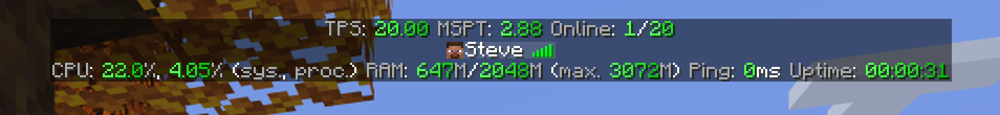

Three places to look
Show the numbers in the tab list, the action bar or a boss bar that fills up and turns yellow, then red, when the server struggles.
Pick the modules for each display, change the colors with themes or write your own text with MiniMessage. Every player can turn each display on or off.
